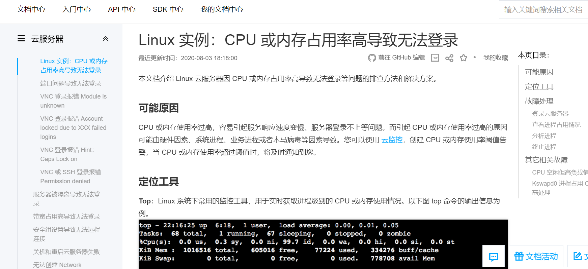
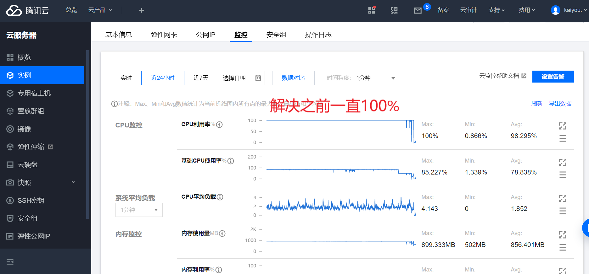
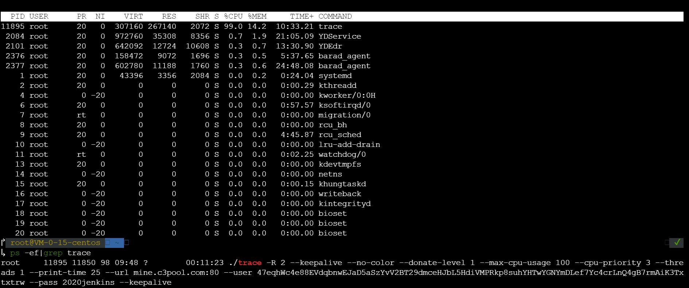
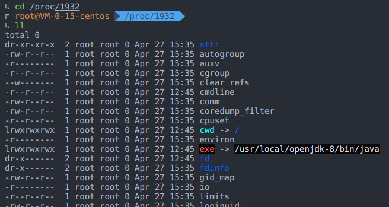
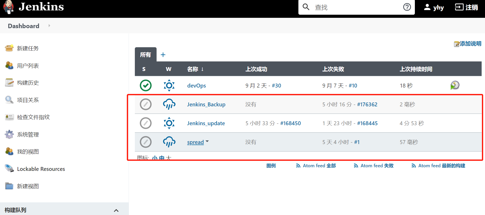
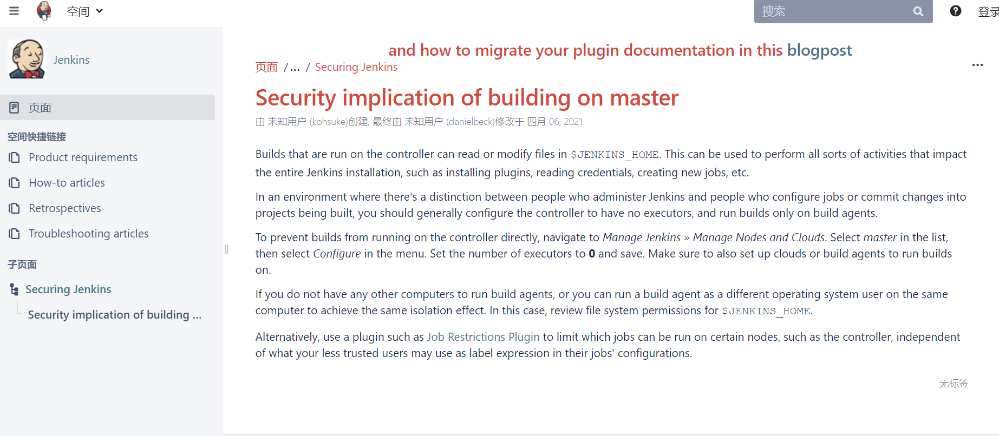
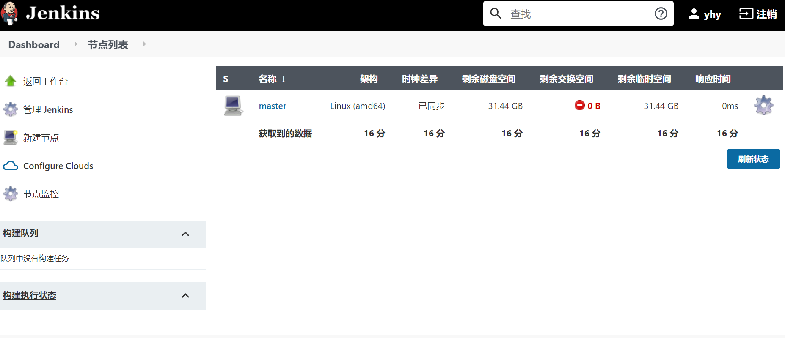
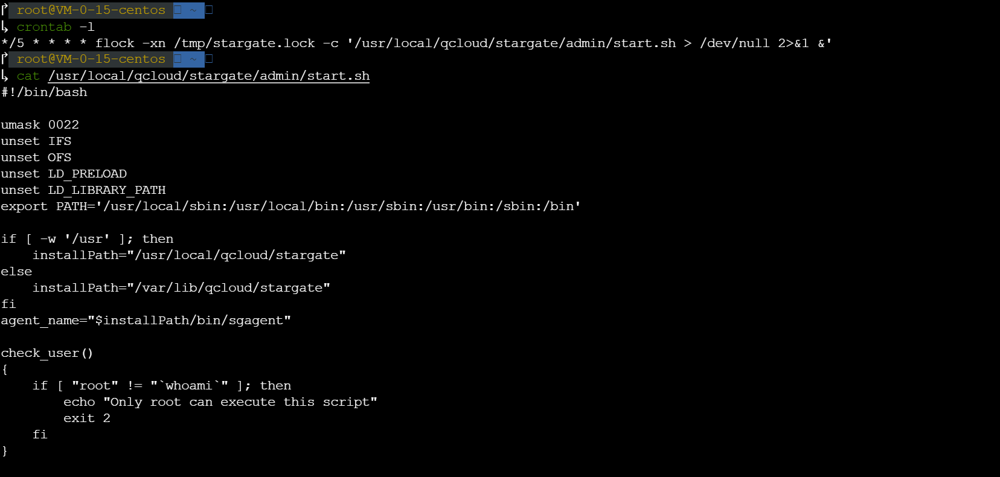

记一次jenkins相关被挖矿处理的应对
前置
事件的起源其实是上次更新blog后的疑问
时隔多年再次更新下blog, 更新下主题, 想着记录点儿什么~
虽说想法是好的, 但作为一个资深沉默的观察员的我, 自然是 当我沉默着的时候,我觉得充实,我将开口,同时感到空虚, 所以平时看看还好, 真要张嘴马上无话可说了, 平时没事儿就思考人生,想起自己毕业时写的一个静态页面, 那是一个介绍我当时玩的游戏的小页面, 想着正好服务器,域名都空着没用, 不妨把这个当时照着视频教程开发的小页面放上去试试, 也算纪念下回归初心
说干就干, 本地ssh登录服务器时却登不上, 之前可能卡了点还总断,但好歹是能登上的, 这回ssh -i指定密钥的情况下却仍提示输入密码, 哪怕密码正确(特意重置了😭)也不断提示重新输入密码直到Permission denied, 明明指定密钥不需要再输密码来着, 看来是哪里出了问题, 到控制台网页登录,发现密钥/密码都是ok的, 只好翻翻文档找解决方案
应对
一条条对下来发现有条对应服务器高负载相关的, 到实例监控上看, 好嘛, cpu果然已经飙到极限了


在一通搜索下得知, 通过
top命令查看当前cpu运行相关状态
通过输入k 指定pid,我们可以直接kill掉占用cpu过高的trace进程, 但多次杀进程这个trace却总会重启, 接着我们通过
PID来找到对应进程和所在目录, pid的查看除top外也可使用1
ps -ef |grep [Pname 进程名]
从上图的最后运行
ps -ef |grep trace的返回可见到一些关键信息, 像什么mine.c3pool.com一看就是老矿工了,2020jenkins可能就是叛变革命的元凶通过
PID来找到对应进程和所在目录则使用, 其中 /proc目录中包含许多以数字命名的子目录，这些数字表示系统当前正在运行进程的进程号，里面包含对应进程相关的多个信息文件1
2
3
4ls -l /proc/[PID]
当然直接 cd /proc/[PID] 再 ll也是一样的
再就是
pwdx [PID]当时忘了截图, 应该和以下相似, 当时的exe和pwd都指向
/var/jenkins_home/XXX../trace但我服务器本地是没有这个目录的

考虑到我的jenkins是docker起的, 马上找到对应的挂载目录, 从jenkins_home一路找到这个trace, 但发现就算将trace删除它也马上会再自动生成😱,接下来通过jenkins作为关键字通过网络搜索果然能发现些端倪, 参考这篇和这篇基本上能确定我碰上的也是这种情况了,登上jenkins一看果然再一直重复跑着几个不是我建的build

之后处理则是按照以下顺序:
- 禁用Jenkins task
- 升级Jenkins版本
- 检查定时任务脚本
升级Jenkins版本
禁用Jenkins task不必多言直接在页面上设置禁用即可, 主要是升级Jenkins版本, 页面上也有提示升级,点击却一直升级失败(可能是网络等原因,关键文件下载失败之类的,这不是很常见吗), 鉴于我的jenkins是docker跑的, 参考网上的一些文章,通过更新容器中的war包来升级jenkins:
1 | # 进入jenkins容器 |
之后重新访问jenkins页面就会发现jenkins在准备升级,稍后就会完成升级, 升级后的jenkins则会提示已有风险

看起来好像说的是通过jenkins controller直接运行的build能直接读写$JENKINS_HOME的文件,相当于能触及像安装插件,读凭证,创建新job等几乎所有操作了, 所以貌似是建议通过其他服务器,来代理跑构建任务(agent), 否则的话就要好好检查下$JENKINS_HOME的权限了, jenkins我暂时用不上,先按上面设置把执行器改成零

检查定时任务脚本
接下来再检查下服务器在跑啥定时脚本
1 | crontab -l # 查看 |

确实发现了个我毫无印象的脚本, 也没多想,直接被我crontab -r了, 一套操作下来top命令查看后, cpu使用已然恢复正常(服务器更本没跑啥,占用率趋近于0了), 罪魁祸首trace也不再复活, 也算是「一件落着/いっけんらくちゃく」
终局
解决后回到本地ssh登录服务器,发现仍是
1 | root@xxx.xx.xx.xxx's password: |
fuck sake,这就太令人奇怪啦,参考网上修改 /etc/ssh/ssh_config 开启密码验证, root用户登录等选项重启ssh服务啥的都试了一遍, 还是不管用, 最后的最后发现从最开始本地登录时的公网ip就打错了一位, 真的是知道结局的我眼泪落下来, 残念
收尾
登录上服务器就好说了, 把之前的静态文件上传上去就好, 看着自己最最开始写的页面真是感慨万千, 仿佛当时的情感又涌上心头, 可现在的自己又有多少成长呢, 是否又失去了大把可能性, 变得越来越无趣了呢.
ps. 服务器域名估计今年中旬就到期了,姑且先放着几天吧, www.mimimimimi.top, 这游戏是我大学要毕业时玩儿的, 当时记得通关一周目普通模式死了300多次, 像素游戏小而精美,很有旺达与巨像的味道, 那几天下来脑袋里都是这款游戏, 哈哈, 毕设要写啥,舍友们都在发愁, 我想着要不然就写个介绍这个游戏的”小网站”吧, 这么多年后它终于被我再次想起,成功上线了😏